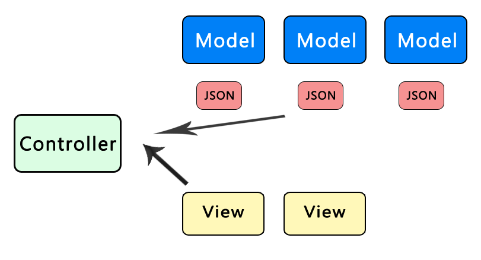

要使用 mojito ，最重要的一點是，它提供了一套 mvc 架構，當然 mvc 這種東西非常的常見與普通，不過對於 node.js 這種新的程式語言來說，node.js 支援的 library 目前還很少，接來下就開始使用 mojito mvc吧。
MVC 分成三個部分，controller , model ,view ，這三個在 mojito 分別的檔案是 controller.server.js , models/ , views/ ，這三個是 mojito module 中預設就會有的資料。
「models」 這個部分最主要的功能是抓 data ，並把 data 存成 json 格式，然後回傳，「views」 這個部分最主要的功能是樣版功能，最後「controller.server.js」就是用來控制讀取哪一個 model 與 view。
models 與 views 的資料格式
因為 javascript 的關系，所以 models的資料格式，我們都使用 json format 來回傳，從上面可以看出，model 與 view 都可以有很多個，再由一個 controller 來控制。
- {
- "title":"mojito title"
- "data":{
- "status":"true"
- }
- }
在 view 中，如果想要抓 title 的值，可以這樣寫 {{title}}，而若是想要抓 status 的值，要這樣寫 {{#data}} {{status}} {{/data}} ，必須要用 data 把 status 包起來，就像是巢狀結構一樣。
- <title>{{title}}</title>
- <div>{{#data}} {{status}} {{/data}}</div>
HTMLFrameMojit
這是 mojito 提供的一個樣版，它分成三個部分，第一塊是 {{top}} ，這裡是用來輸出 css 連結，第二塊是 {{child}}，這是用來顯示最重要的網頁內容，第三塊是 {{botom}} ，這裡是用來顯示 javascript 連結。
- /usr/lib/node_modules/mojito/lib/app/mojits/HTMLFrameMojit/ : HTMLFrameMojito 的原始碼都可以在這個路徑中找到。
/usr/lib/node_modules/mojito/lib/app/mojits/HTMLFrameMojit/views/index.mu.html : 這是 HTMLFrameMojit 的樣版內容，從這個檔案裡，就可以清楚的看到 top, child , bottom ， 「top 與 bottom」 都是用來顯示 css , js 的，所以這二個塊區是由 assets.addCss() , assets.addJs() 這兩個 function來産生， 「child」 這個塊區為主內容，必須自已建立一個 mojito module 來輸出你的網頁畫面。
現在就來使用 HTMLFrameMojit 吧，首先要打開 app 的 application.json ( test_app/application.json )，並在 specs 這個 field 中加入以下內容，child.type 是指 module 的名稱，「frame」是我給 HTMLFrameMojit的一個名稱，title 就是網頁的標題名稱。
- "specs": {
- "frame":{
- "type":"HTMLFrameMojit",
- "config":{
- "title":"我的第一個網頁",
- "child":{
- "type":"test_module"
- }
- }
- }
- },
接著我們在 routes.json 中加入網址路徑設定，首先我先給他一個名稱叫 "main_content" ，接著指定使用的 protocol 方式為 [get]，網址路徑「/」(http://localhost:8666/)，執行的 module 為 mojito 的內建功能 HTMLFrameMojit，在 application.json的設定中，我們已經指定他的名稱為 frame，這裡就可以直接指定我要執行 frame 的 index。
- "settings": [ "master" ],
- "main_content":{
- "verbs":["get"],
- "path":"/",
- "call":"frame.index"
- }
- mojito start 最後在 test_app 的目錄下執行，就可以啟動 web server 了。
- http://localhost:8666/ : 用 browser 打開來看吧。